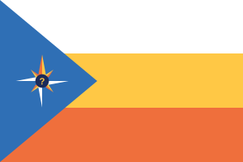
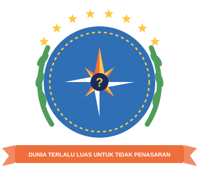
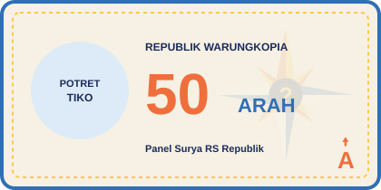

Republik
Warungkopia
Dunia terlalu luas untuk tidak penasaran.
Penduduk
0
warga · ibu kota Warungkopia
0bangunan berdiri
—tahap negara
0episode
ARAHmata uang
Peta
Pulau Warungkopia hari ini
Yang berwarna sudah berdiri. Yang bertanda "?" masih menunggu usulan warga.
Pembangunan
Yang sudah dibangun warga
Voting warga
Warga yang memutuskan
Republik Musyawarah: warga memilih, Dewan Delapan Arah menjalankan.
Punya usulan bangunan?
Tulis di komentar episode terbaru. Empat usulan teratas masuk polling Community YouTube.
Hasil voting sebelumnya
The Kopians
Dewan Delapan Arah
Delapan warga tetap, delapan arah mata angin, satu tugas: menjalankan pilihan warga.
Sejarah
Dari nama saja, sampai jadi kota
Identitas negara
Kompas Delapan Arah
Delapan arah, delapan The Kopians, satu tanda tanya di tengah.

